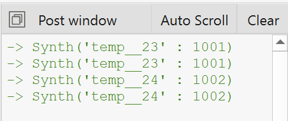
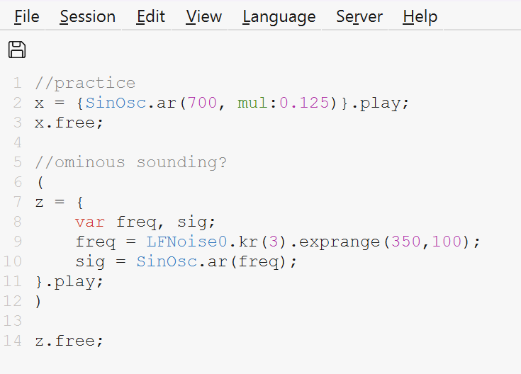
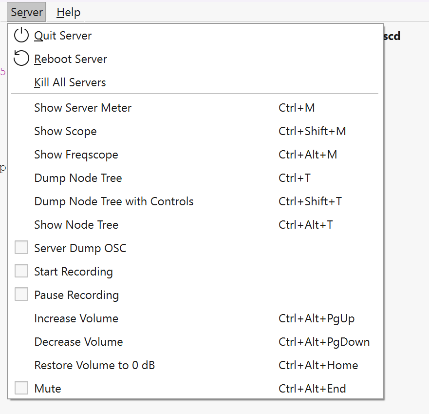

CT120 Project 4: Cool Tools
For this project I decided to experiment with Super Collider. At first I was really overwhelmed with the starting screen. It wasn't self explanatory, so I immediately started searching for YouTube tutorials. I stumlbed upon a playlist and watched the first three videos. I was able to make sound, and learned how to work with amplitude and frequency, along with learning how to write a line of code that will stop my function from playing music. I'm still not sure what my function does, only what my variables reprsent. Here is the YouTube playlist I used: https://youtube.com/playlist?list=PLPYzvS8A_rTaNDweXe6PX4CXSGq4iEWYC&si=EiTqu4dLSdaXyIkP.
Some issues I stumbled across: The first issue I came across was no sound coming from the lines of code I was running, it turns out I skipped the part of the tutorial that shows you how to boot the server. Another issue I experienced was seeing "ERROR: Command line parse failed -> nil" when running my code. Since I didn't fully understand what my function was doing, it was hard to know what to fix, so I often just replayed the tutorial until I found a syntax error.


